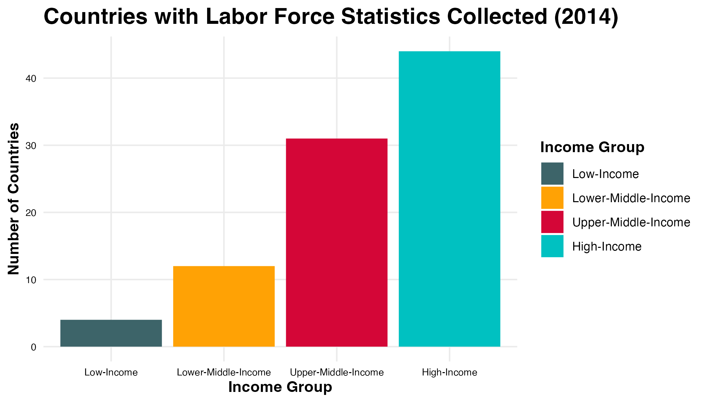
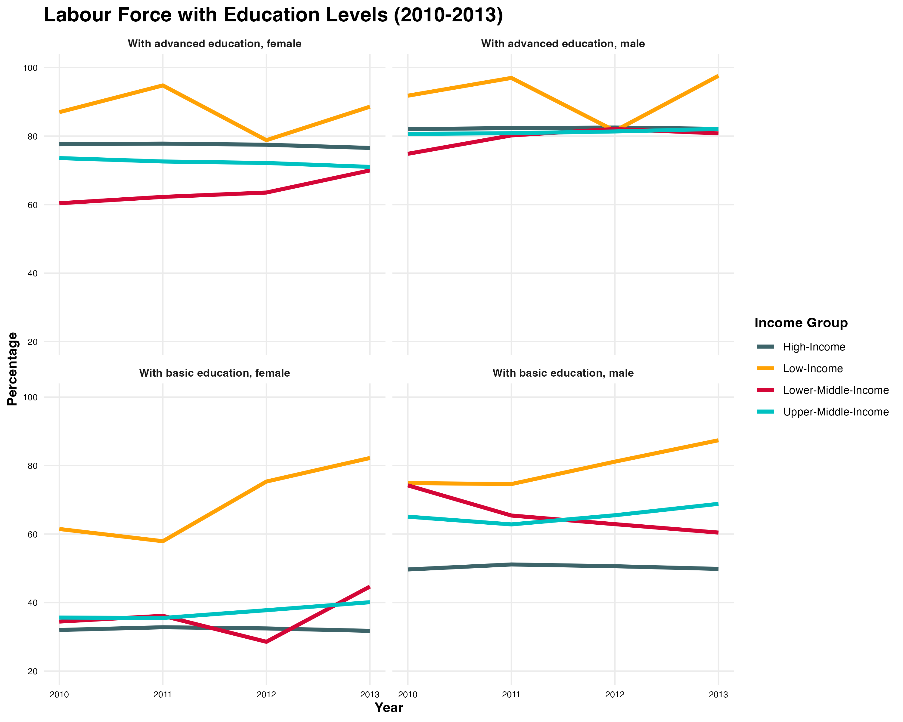

Global study of Gender Inequality in Education Access
Abstract
Education is one of the key drivers in the development of society. In the global pursuit of gender equality, education stands out as both a fundamental right and a pivotal area of progress and challenge. In this article we aim to explore gender inequality in education access across the globe.
Using data obtained from the World Bank, our team analyzed the relationship between education attainment, education enrollment, gender, and other economic factors such as Gross Domestic Product (GDP), the Gross National Income (GNI) index, and population size. The data utilized is from the years 2010 - 2018 (with some historical data dating back to 1970). This project focuses on a larger global scale and then provides interactivity for readers to dive into specific regions, countries, and demographics in order to identify trends and patterns. We hope that you find this dataset as interesting and expository as we did - from regions with the highest diparity in education enrollment based on gender to the linkage of other factors that may be contributing to gendered disparity. It encouraged us to ask questions about the forces at play (economic, political, social) affecting women’s access to education and thus to a better life. We encourage you to investigate these revelations, which illuminate noteworthy discrepancies and their wider consequences for realizing gender parity in education.
Introduction
In the global pursuit of gender equality, education stands out as both a fundamental right and a pivotal area of progress and challenge [1]. The accessibility of education for women is closely associated with several economic metrics, such as GDP per capita, GNI per capita, and the fiscal priorities of the government [2].
Throughout history, women have faced significant barriers to equitable access not only to education and the fundamental freedom to control their own lives. These challenges have both directly and indirectly fueled the ongoing global gaps in educational attainment. The Universal Declaration of Human Rights declares that everyone has the right to education is a bold and basic right [3]. This acknowledgement acts as a call to action to overcome the remaining obstacles that impede women from enjoying this right to the fullest extent possible, as well as a reminder of the progress that has been done. By examining these disparities and understanding their deep-rooted causes, we can better advocate for and implement strategies that ensure all women have the opportunity to learn, grow, and participate fully in society.
Our exploration will delve into the current state of this divide, examining the myriad factors — from economic to socio-political — that perpetuate it. By understanding these underlying causes, we can more effectively devise strategies to overcome these barriers and ensure that women and girls everywhere have equal opportunities to learn and succeed. This analysis will not only shed light on the challenges but also highlight the areas where progress has been made, offering a nuanced perspective on the global journey towards educational equity.
We will address six critical questions:
- How does female enrollment in education differ between different regions? How do these trends continue over time?
- What role does education play in economic growth and development?
- To what extent is gender equality present in educational access and outcomes?
- How do education trends reflect labor employment trends, especially regarding gender?
- How much do governments prioritize resource allocation to education?
This analysis will not only shed light on the challenges but also highlight the areas where progress has been made, offering a nuanced perspective on the global journey towards educational equity.
Visualizing Enrollment Disparities
Having a sense of global picture is important to understand the context of the data. We will start by looking at the Gross Enrollment Ratio per education level in the world. Gross enrollment ratio is calculated by dividing the number of students enrolled in a specific education category regardless of age by the population of the age group which officially corresponds to education category, and multiplying by 100. This will allow us not only to identify different areas where there are discrepancies or the gender gap in education is more pronounced, but also what data was available to the World Bank. Furthermore, we can also contrast globally different levels of education.
From these plots, we can see that globally, the greater education level, the lower the enrollment rate. This is expected as the higher the education level, the more specialized and innaccessible the education becomes and the less people are likely to enroll in it. Additionally, in most countries, the primary education level is mandatory by law. However, there seems to be a greater disparity in certain areas of the world. For the secondary level, while there is not too much data available in this region, Sub-Saharan Africa seems to have the lowest enrollment rates with rates as low as 28%. This is concerning as in many countries, secondary education is also mandatory. For the tertiary level, the same region seems to have extremely low enrollment rates, along with Latin America and the Caribbean, East Asia and the Pacific, and the Middle East and North Africa. However, there are outliers in these countries and they can be identified and studied more in depth in order to identify the reasons behind the high enrollment rates and try to mimic them in other nations. Additionally, Europe and Central Asia along with North America seem to have the highest female enrollment rates in the world, making them a good example to follow.
Global Regions: A Tapestry of Economic and Educational Landscapes
The idea of education as a global source of hope is frequently associated with economic success. However, the way this connection appears varies greatly throughout the world, greatly impacted by local economic conditions. The World Bank’s seven-region model, which divides the world into Europe & Central Asia, Latin America & Caribbean, Middle East & North Africa, East Asia & Pacific, Sub-Saharan Africa, and North America, offers a structural lens through which to view these variations. The tale of educational access varies by region, depending on the economic context [4].
We can see this division here:
This map displays the categorization of countries into regions. Geographical proximity influences economic and social dynamics, e.g. climate conditions, natural resources, and trade patterns. These regions are also divided based on common developmental challenges, region often being a proxy for poverty, inequality, infrastructure needs, and access to basic services. These groupings are a helpful framework for comparative analysis by policymakers, researchers, and development practitioners to identify best practices, learn from each other’s experiences, and design more targeted interventions. Similarly, we used these region categories to help us understand the education data, and in the future to provide recommendations via regional classification for the formulation of regional policies and strategies.
While exploring all of the education data, this image seemed necessary to us first as researchers, and next to our audience to quickly acclimate them for a deeper investigation.
Teasing out Enrollment by Region
To begin our analysis, we will be looking at different regions usually studied by the World Bank and represented above. While this graph may not have a great impact in an analysis, we can see how higher level of education bubbles are smaller, specially the Tertiary level:
To begin our analysis, we will be looking at different regions usually studied by global organizations like the World Bank. We will be focusing on the following regions: South Asia, Europe & Central Asia, Latin America & Caribbean, Middle East & North Africa, East Asia & Pacific, Sub-Saharan Africa, and North America. The objective is to visualize the differences in women’s enrollment at different education levels across the world at a global scale and identify any trends or patterns that may arise. This will also allow us to consider if some regions are worth exploring in more detail than others in our analysis.
From the chart above, not surprisingly, we can see that for all regions, the higher the education level, the lower the enrollment ratio. As highlighted, the regions with the largest disparity in higher education enrollment are significant. This is expected as the higher the education level, the more specialized and less accessible it becomes - we can see that these regions have higher enrollment ratios than others. Specifically, the regions with the lowest enrollment, South Asia and Sub-Saharan Africa, are followed by Middle East & North Africa, Latin America & Caribbean, and East Asia & Pacific. However, the scope of regions limits our ability to make a thoughtful comparison, as we do not know if data has not been collected by the World Bank in some countries.
This is important information to consider as we move forward with our analysis. One can think that it may be due to economic reasons, social and ideological reasons, or even political reasons. However, this problem has been present for decades and instead of taking assumptions to answer this question, we should identify the key reasons for this disparity and address it accordingly.
Labor Force with Education Levels
The World Bank Data Catalog includes data about the proportion of males and females in the labor forces with advanced education and basic education. The proportion of high-income, upper middle income, lower middle income, and low-income countries is uneven in the bar plot below. High income countries reported the most labor statistics while low-income countries reported the least. In the high income category, over 40 countries reported these statistics. Although capturing data about female educational attainment is a priority for global development, only four low income countries reported labor statistics based on education level between 2010 and 2013. These four countries include Ethiopia, Madagascar, Mozambique, Uganda. The low income group represents the recent state of these four countries rather than the total of 26 low income countries classified by the World Bank.

Labor force participation is an important statistic in assessing the progress for equal opporunity for women. For each income group, the proportion of males and females was captured for different levels of education, including basic education and advanced education. The proportion for each gender and education level was calculated with respect to the percentage of total labor forces participation for each gender. The countries were grouped by income group and the average labor percentage was calculated for each year.
From 2010 to 2013, in high income countries, the proportion of male labor with advanced educaiton is above 80% while the proportion for female labor with the same education level is below 80%. The lower middle income countries showed the largest gap between female labor with advanced education and male labor, which was higher. For male and females labor with basic education, there are more males than females in the labor force. Interestingly, the gap between female labor and male labor is larger at the basic education level.
Surprisingly, the “low income” group, which includes Ethiopia, Madagascar, Mozambique, Uganda, showed high proportions of female labor with basic and advanced education levels. According to the World Bank, “In many countries, enrollment in tertiary education slightly favors young women, however, better learning outcomes are not translating into better work and life outcomes for women. There is a large gender gap in labor force participation rates globally.” These findings suggest that reviewing overall labor force participation may begin the analysis of the recent progress in female education attainment. However, further research and more questions about different types of female labor can bring a better focus and attention to this developmental goal.

Economic Influences on Female Access to Education
The World Bank assigns the world’s economies to four income groups, low income, lower-middle, upper-middle, and high income. The classifications are updated each year on July 1 and are based on the GNI per capita of the previous year (2021). GNI measures are expressed in United States dollars (USD), and are determined using conversion factors derived according to the Atlas method (The Atlas method smooths exchange rate fluctuations using a three-year moving average, price-adjusted conversion factor. The USD estimate of GNI per capita is derived by applying the Atlas conversion factor to estimates measured in local currency units (LCU)).
A clear indicator between a higher female enrollment rate is an increased GDP per capital and a higher GNI per capita. The socio-economic implications of this are clear: female education enrollment is linked to a higher female enrollment rate. This plot also visually helps to highlight standout data, who have an inverted relationship between enrollment and economic indicators: a higher GDP and GNI per capita and still have a lower female enrollment ratio. The inverted “V” of Switzerland and Norway at the top of the plot show one of the few flipped relationships between GDP & GNI - either due to the relative wealth of those nations, or the pedigree of their education systems (perhaps their students don´t require tertiary education). Income is included by color to show that high income countries do have a higher female enrollment ratio, although even for lower middle and low income countries, the GDP and GNI per capita ratios show that the female enrollment ratio can outstrip economic information.
Regional Female Enrollment 1970 - 2013
It is also important to understand the historical changes in female enrollment of different regions. This would allow us to identify which regions are making an effort to support female education and which regions are not. Trends often emerge over longer periods in time. For this, we introduce the plot below - it shows the country count of each region (as it may be important to understand the data distribution and may be linked to agreements between them on certain aspects linked to education). It also shows the Gross Enrollment Ratio for females per education level overtime.
Hovering over the bars will highlight the change overtime of Gross Enrollment Ration for women in all education levels
One of the primary reported metrics when education is covered in press is that the female enrollment rate for higher education (tertiary, in most countries) has surpassed the enrollment rate of men. In order to visualize the comparative rate of female enrollment over time for each education demographic, our interactive plot shows a breakdown of this (happily) increasing ratio of female enrollment.
Some of the most interesting findings were that the increase in tertiary female enrollment over time supports the coverage that there are more women enrolling in higher education. The other, more surprising finding was that some regions relative enrollment were so low when seen on the global scale. For instance South Asia’s tertiary gross enrollment ratio is in the low twenties. The other humorous finding was that North America’s enrollment was consistently at 100% for primary school - a straight line - likely due to the mandatory enrollment rules for education.
Government Spending (Dollar per capita, Purchasing Power Parity)
Throughout this narrative, we looked at the data through the aggregates of regions and in terms of economic classes, however it is also important to understand this change on a granular scale and see if there any change within the Government spending per capita in Purchasing Power Parity between 2014-2018, as an extension to see if there has been any change prior to COVID-19´s emergence. This plot shows the link between national spending on education (per capita) and level of education (primary, secondary, tertiary). We see a lot of interesting patterns here how few countries such as Mexico has greater change in government spending in terms of Primary education than Secondary and Tertiary. On the other hand, Iceland has lowest relative change in government spending per capita for Primary than the others, but Chile has lowest change in Tertiary than others. In constrast, if we look at the OECD average overall, which measures the aggregate change for all its member nations, we see there is constant change across primary, secondary and tertiary. This highlights the importance of looking at countries on a granular level. In terms of the plot, the relative view in dollars per capita, it is quickly highlighted which nations spend per education demographic relative to their peers. The absolute view shows the actual spending per person, which can be a more useful metric for understanding the actual spending on education. All of these metrics are important for understanding the economic and social implications of education spending, and are standardized to be shown in USD.
Conclusion
The data presented in this analysis is a small part of the global education data available. The data is collected by the World Bank and other global organizations to help understand the state of education in the world. The data and the team´s subsequent analysis can be used by policymakers, researchers, and development practitioners to identify best practices, learn from each other’s experiences, and design more targeted interventions. The data is also used to monitor progress towards the Sustainable Development Goals (SDGs) and other global development goals.
Sources
[1] Nussbaum, M. C. (2004). Women’s education: A global challenge. Signs: Journal of Women in Culture and Society, 29(2), 325-355.
[2] Adams, D. K. (2002). Education and national development: Priorities, policies, and planning (Vol. 1). Manila Philippine: Asian Development Bank.
[3] United Nations. (n.d.). Universal Declaration of Human Rights. Retrieved from [https://www.un.org/en/about-us/universal-declaration-of-human-rights#:~:text=Article%2026,on%20the%20basis%20of%20merit]
[4] Our World in Data. (n.d.). Retrieved from [https://ourworldindata.org/grapher/world-regions-according-to-the-world-bank?tab=table]